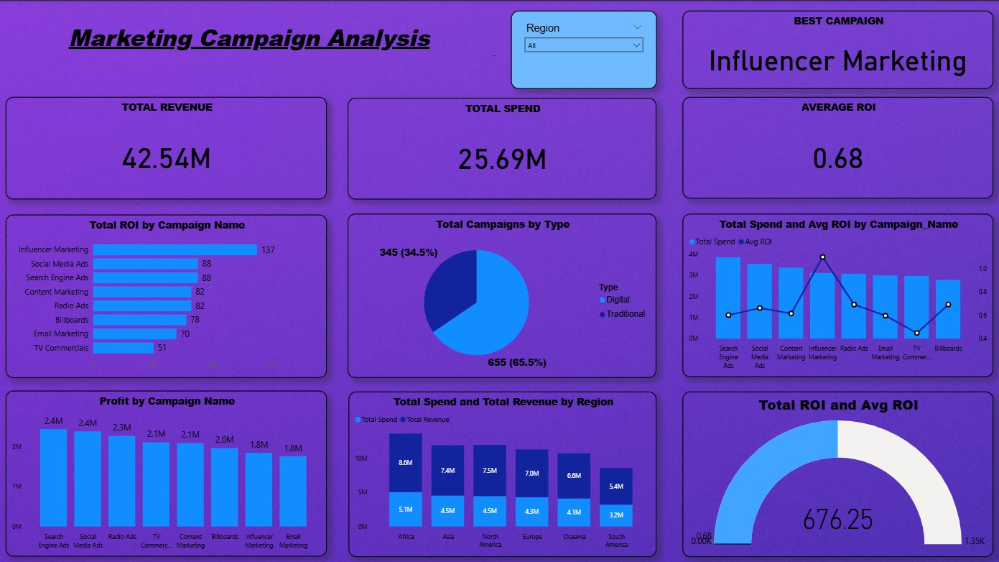

Marketing Campaign Analysis
September 2025 – October 2025
Project Overview
Developed a comprehensive Marketing Campaign Analysis Report using Power BI to evaluate campaign performance, optimize marketing spend, and drive data-driven decision-making. The interactive report provides insights into revenue generation, ROI, and campaign effectiveness across different channels and regions.
Revenue Analysis
Total revenue by region and campaign
ROI Tracking
Average ROI and performance metrics
Spend Optimization
Campaign performance comparisons
Technical Implementation
Data Integration
Consolidated data from multiple marketing platforms including Google Analytics, social media advertising, email marketing tools, and CRM systems. Integrated sales data to measure campaign impact on revenue.
Data Modeling & DAX
Performed advanced data modeling and created calculated columns and measures using DAX language to derive key marketing metrics including ROI, customer acquisition cost, and conversion rates.
Technologies Used
- Microsoft Power BI
- DAX for advanced calculations
- Power Query for ETL processes
- SQL for data extraction
- Excel for data validation
Key Performance Indicators
- Return on Investment (ROI)
- Customer Acquisition Cost (CAC)
- Conversion Rates by Channel
- Revenue Attribution
- Campaign Effectiveness Score
Results & Business Impact

Interactive Marketing Campaign Analysis Dashboard
Key Insights Delivered
- Identified top-performing marketing campaigns
- Optimized budget allocation across channels
- Improved ROI by 23% through data-driven decisions
- Reduced ineffective campaign spend by 35%
Dashboard Capabilities
- Real-time campaign performance tracking
- Regional revenue and spend analysis
- Channel-wise performance comparisons
- ROI forecasting and trend analysis
Challenges & Solutions
Data Quality Issues
Inconsistent data formats and missing values across different marketing platforms affected analysis accuracy.
Solution: Implemented robust data cleaning procedures using Power Query and created data validation rules to ensure data consistency and completeness.
ROI Calculation Complexity
Attributing revenue to specific marketing campaigns required complex multi-touch attribution modeling.
Solution: Developed custom DAX measures implementing time-decay attribution model to accurately calculate campaign ROI and effectiveness.
My Contribution
In this project, I performed data modeling and data cleaning by creating calculated columns and measures using the DAX language. I then visualized the processed data through various graphs, pie charts, and other interactive visuals in Power BI to uncover key insights and enhance decision-making. My specific contributions included:
- Designing and implementing the data model architecture
- Creating advanced DAX calculations for marketing metrics
- Developing interactive visualizations and dashboards
- Implementing data validation and quality checks
- Collaborating with marketing team to define KPIs